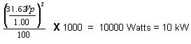

- 00000018WIA30858F20GYZ
- id_131067732.0
- Jul 19, 2019 11:00:30 AM
Dummy Load and Cables Calibration
Prerequisites
| Required persons | Preliminary requirements | Procedure | Finalization |
|---|---|---|---|
| 1 | Not Applicable | 30 minutes | Not Applicable |
| Item | Quantity | Effectivity | Part number | Manufacturer |
|---|---|---|---|---|
| 50-ohm dummy load, 200 watt, 30 dB attenuator - Bird Model 8322 (or equivalent). | 1 | - |
46-317724P14 | - |
| RF Test Cables Kit | 1 | - |
46-255816G1 | - |
| Exciter 3 RF System Cabinet Service Cable Kit | 1 | - |
5117087 | - |
About this task
This procedure provides directions for determining the true loss attributable to the dummy load and cables used when measuring the RF output power with oscilloscope of 100 MHz bandwidth or greater. It is necessary to know and account for the actual loss these components contribute in order to accurately measure RF power. This procedure is not needed if using the RF Power Measurement Kit. The RF Power Measurement Kit has already been calibrated so that this loss is known and accounted for.
WHEN MEASURING HIGH FREQUENCY (IN THIS CASE, 64 MHZ ) ON ANY 100 MHZ SCOPE, THERE MAY BE AN ERROR DUE TO THE BANDWIDTH LIMITATIONS OF THE SCOPE. (IF NECESSARY, READ ‘SCOPE TRIVIA’ AT THE END OF THIS PROCEDURE.)
Overview
Procedure
Initial Setup
Procedure
- At the operator work space, prepare the system for a Dummy Load
scan using the procedure, see below.
- Click the Scan New Pt buttons.
Figure 2. New Patient Icon 
- Patient Id: geservice, and then press Enter.
- Weight (Lb): 111, and then press Enter.
- Choose Show All Protocols... and then Service. Select 1.5T dummy load cal, click the center arrow, and then click the Accept button.
- Click the Start Exam button.
- Set a landmark.
- Click Advance Scan.
- Click Save RX.
- Select the Research Options from the
drop down next to the Scan button, then select Display
CVs.
Set value of CV calmode to 2 (trapezoid pulse), then click Accept key.
(Caution here. Make sure the previous CV has been cleared before entering the next one. Look at the screen!)
Set value of CV p2_ramp to 1 (1 µsec ramp time), then click Accept key.
Set value of CV t2 to 50000 (50 msec tr), then click Accept key.
Set value of CV pismode to 1 (exc service), then click Accept key.
Set value of CV pmode to 1 (data collection), then click Accept key.
Set value of CV daqm to 1 (data in window), then click Accept key.
- Select the Research Options from the drop down next to the Scan button, then select Download then select Manual Prescan.
- Click the Scan New Pt buttons.
Data Collection
Procedure
Analysis
Procedure
Calculation of RF power
Procedure
- Peak voltage should be used in the calculation in order to get
an accurate result. It can be converted to power using the following
formula as long as certain factors are known and accounted for. The
scope correction factor MUST be known. So must the actual total loss
attributed to anything that connects the measuring device to the source.
This often includes the accumulated loss associated with the dummy
load and any interconnecting cables. Table 7 shows the calculation of power if all the attenuating devices in
the measurement circuit exhibited perfect loss; that is, the devices
added no more or less loss than what they were designed to provide.
Table 8 shows the same calculation of power but accounts
for the measurement-circuit loss values in deriving the true power.
Note that the loss has a significant impact on the calculated power.
Note:
THE SCOPE CORRECTION FACTOR MUST BE KNOWN FOR THE FORMULAE SHOWN IN Table 7 AND Table 8. IF IT IS NOT KNOWN, DO NOT USE THIS METHOD. GROSSLY INACCURATE MEASUREMENTS AND POSSIBLE SYSTEM DAMAGE WILL RESULT.
Table 7. RF POWER CALCULATION WITH NO LOSS  Assume Z = 50 Ohm, Vpeak = 31.62,
scope correction factor = 1.00 (no loss), dummy load and cables atten.
= 1000, (dummy load and cables are all ideal)
Assume Z = 50 Ohm, Vpeak = 31.62,
scope correction factor = 1.00 (no loss), dummy load and cables atten.
= 1000, (dummy load and cables are all ideal)
This result assumes a theoretically perfect situation in which there is no loss. These situations, in common practice, rarely exist! - Now, consider the "real life" type situation in Table 8 in which the loss is considered:
Table 8. RF POWER CALCULATION WITH LOSS CONSIDERED
Assume Z = 50 Ω, Vpeak = 27.36, scope correction factor = 0.88, dummy load and cables atten. = 1028

Accounting for the loss resulted in an accurate answer. 9937 Watts is as close as we can hope to get to 10000 Watts without using the RF Power Measurement Kit. Note that if none of the loss (If considering 0.88 as 1.0) had been accounted for the error could have been 2242 Watts or 22.6%. As a result, the observer would attempt to adjust the RF power far above the 10000 Watt limit!
System Restoration
Procedure
- Reconnect original cables to the SRFD J14 and Mega Switch J100.
- Enable the TNS. See Starting TNS Function.
- Perform a TPS Reset to set the MGD back to imaging mode so that the system will be able to scan. Failure to do this will result in Autoprescan failures due to a loss of receive signal.
- Perform one satisfactory head or body scan.
Wattmeter Trivia
Procedure
- Why are measurements between a oscilloscope and a Bird Wattmeter found to be different? Repeated GEMS Education Center lab groups that performed the Dummy Load and Cables attenuation process correctly, and obtained an accurate attenuation value, were able to accurately measure RF power as well as with a 400 MHZ scope! Remember, for wattmeter measurements however, the meter reading must be multiplied by the atten factor. Leaving this little factor out is the reason why the above ‘note’ was made. In body mode the wattmeter is placed after the dummy load. Its atten value must be used to calculate the correct RF value. If it is NOT used, then it should be expected there will be an error of 10% or more!
- In head mode, the wattmeter is placed before the dummy load. In this case only the ‘cable’ factor is used to correct the wattmeter reading. The ‘cable’ factor is the other atten test you did for the 10 foot cable only. Typically that value is between 1.0 to 1.2. Doesn’t sound like much???? Take your calculator out for a moment. Take 2,000 watts (displayed reading) and multiply by an atten factor of 1.0 ; the results are obvious, 2,000 watts. Now take the same displayed 2,000 and multiply it by an atten factor of 1.2 = 2,400 watts! Hopefully this example will show the importance of the attenuation values. You just calculated a 20% error if you were wrong because you didn’t do atten test on the 10 foot cable!
Scope Trivia
Procedure
What to do next
Finalization
No finalization steps.